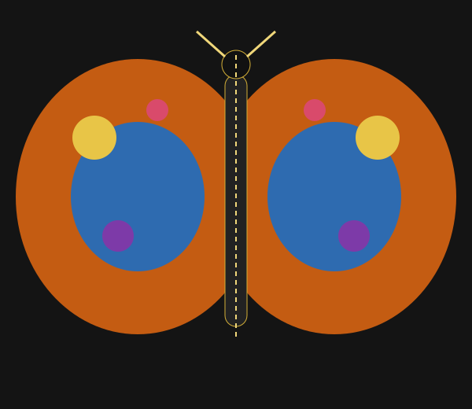

My Symmetrical Butterfly Design

What I Created
For my creation, I made a colorful butterfly design using reflection symmetry. I wanted to use the same mathematical idea that I found in the real butterfly, but create my own version of it.
How It Connects to the Math
I used the y-axis as the center line of my design. The shapes and points on one side are reflected to the other side. For example, a point at (4, 3) is reflected to (-4, 3). The x-value changes, but the y-value stays the same.
One Choice I Made
One choice I made was to use the same shapes and patterns on both wings. I placed them on opposite sides of the center line to make the butterfly look balanced and symmetrical.
What I Want People to Notice
I want people to notice how math can be used to create something beautiful. When they look at my butterfly, I want them to see both the design and the reflection symmetry behind it.
What I Learned From the Math
Before this project, I usually looked at a butterfly only as something beautiful in nature. I never really thought about the mathematics behind its wings. While working on this project, I learned how reflection symmetry and coordinates can explain the balanced shape of a butterfly. At first, using coordinates was a little confusing for me, but after working with the points and the y-axis, I understood it better. This project helped me see that math is not only about solving problems. It can also be found in nature and art.